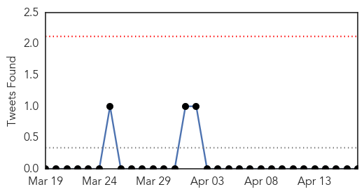

30 Day Trends
Web: 0 alerts, 0 warnings
Twitter: 0 alerts, 0 warnings
Top Articles:
- 0.998
- Mozambique, Malawi, Zimbabwe: Cholera Situation (as of 15 April 2015) - Mozambique
- 0.996
- Early Haiti rains bring risk of bleak cholera season
- 0.993
- Cholera Kills 20 In Ebonyi
- 0.991
- Clean water is essential to preventing the return of cholera
- 0.802
- Mapping Genomes to Understand Contaminated Foods
- 0.500
- Kisumu set to battle cholera outbreak - Kenya
Top Tweets:
-
No tweets found for Apr 17, 2015
Web/News Articles

Tweets
Article Locations